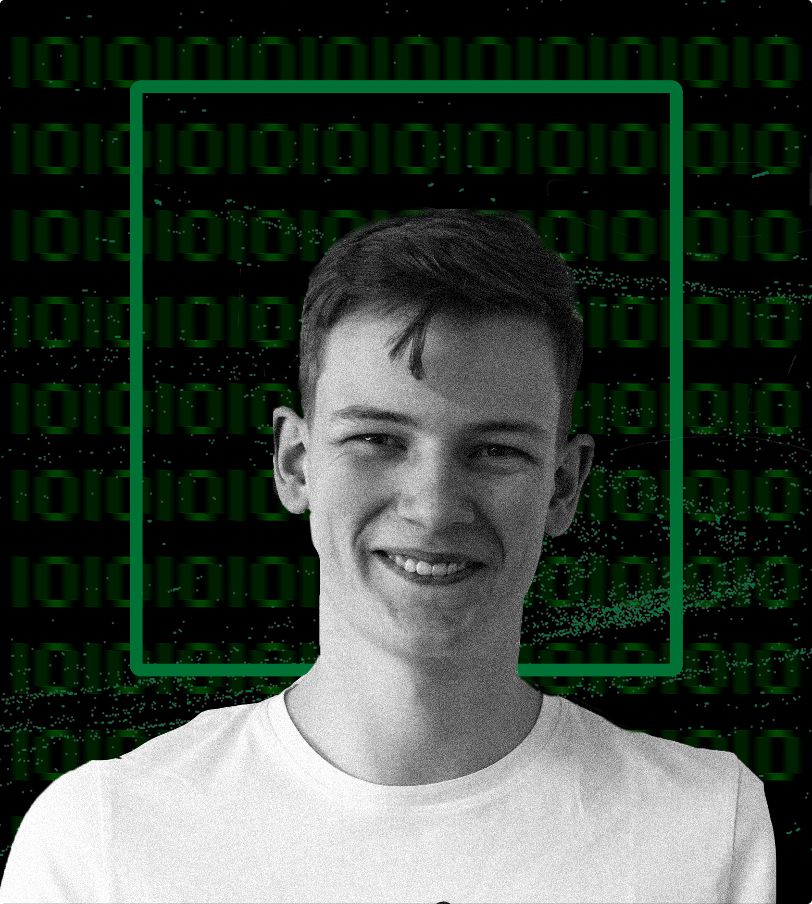
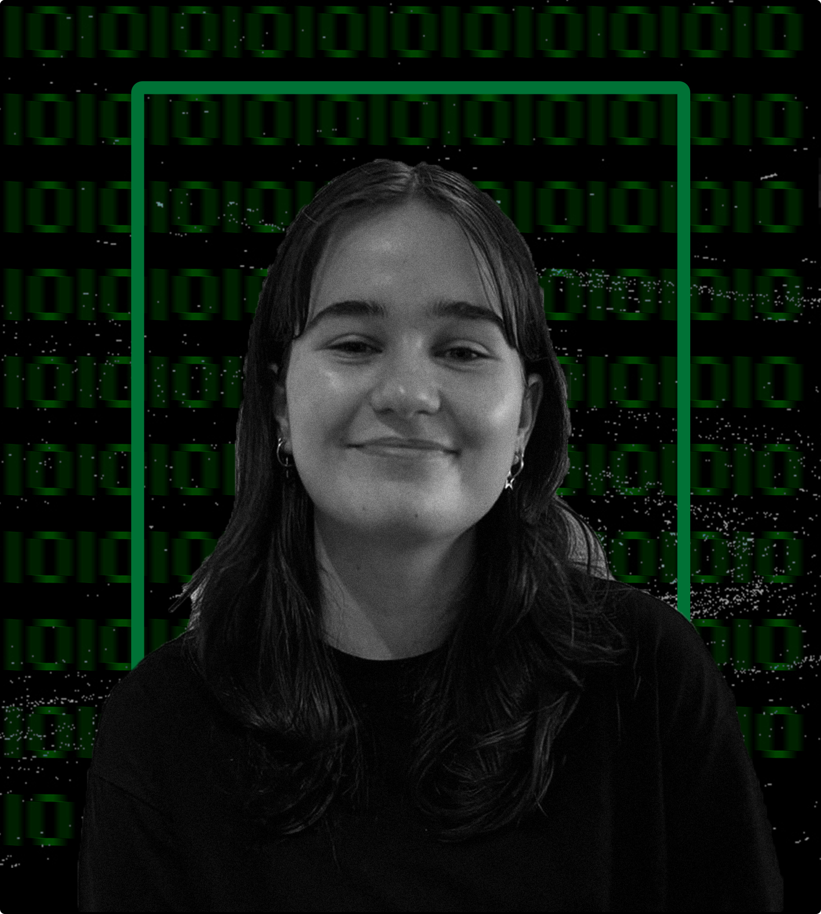
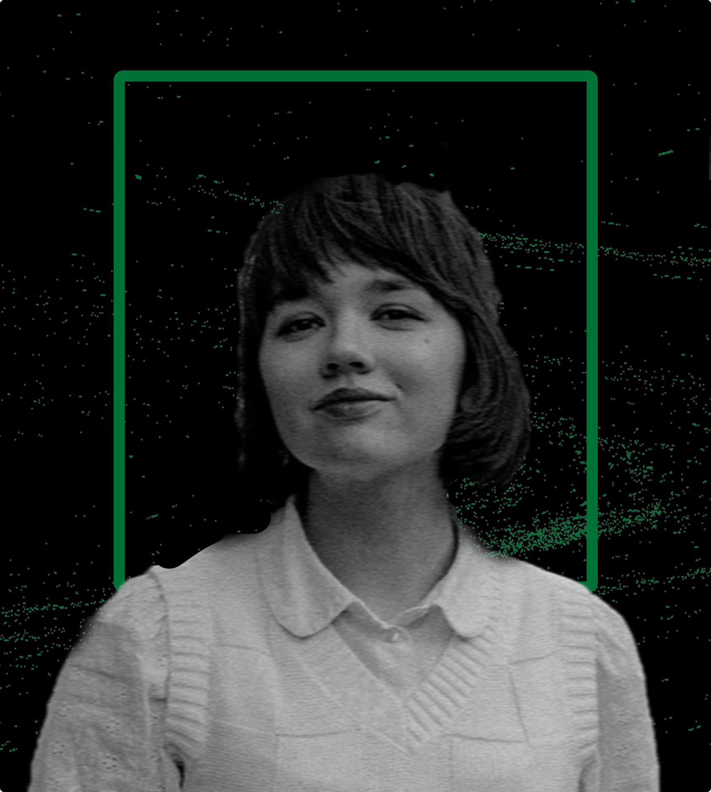

Team

Jay studeert CMD aan de HvA en is daar in aanraking gekomen met de simulatie-theorie. Na het horen van verschillende verhalen en zelf onderzoek te hebben gedaan, weet hij het zeker: de simulatie is geen theorie, het is de werkelijkheid.

Sam Fee Haarsma student aan de HvA. Heeft al veel science fiction films en boeken gelezen. Weet veel over het onderwerp te vertellen en heeft veel complottheorieën.

Dasha studeert CMD bij HvA, zij houdt van onderzoeken en schrijven van sci-fi verhalen. Zij is bezig met de simulatie theorie sinds 2020, en werd geïnteresseerd toen de hele wereld in de chaos was. Nu wilt zij met andere mensen haar onderzoek te delen.